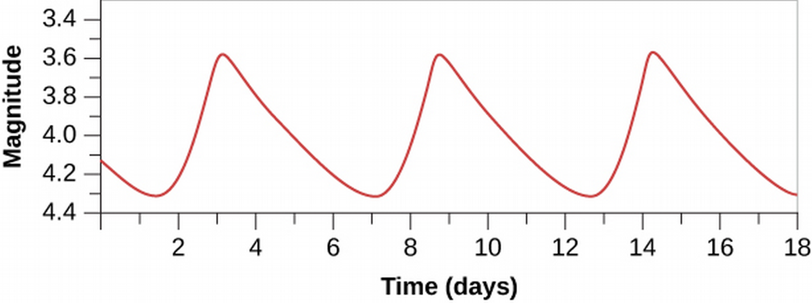

ASTR101 Ch 19-20
Ch 19 - Celestial Distances
Fundamental Units of Distance
- Distances initially had to do with the human body:
- The inch is the approximate distance between knuckles
- The yard is the span from the extended finger to the nose of the British king (??)
- Foot is the British king's foot
- Different countries had different measures.
- Around 1750, a uniform set of standards was made
The Metric System
- The metric system is the SI units we've been studying, and has the meter as the unit of length.
- This includes prefixes like centi-, mili-, kilo-, etc.
Modern Redefinitions of the Meter
- In 1889, the meter was defined by a bar of platinum-iridium metal in Paris, of which precise replicas were made.
- As science gets more and more precise, so do the definitions of these distances.
- In 1960, a meter is defined as the distance of 1,650,763.73 wavelengths of a specific atomic transition of krypton-86.
- In 1983, a meter is defined in terms of the speed of light, as the distance light travels in 1/299,792,458.6 seconds, which is even more stable.
- Therefore, a light-second is defined as the distance that light travels in one second, 299,792,458.6 meters.
Distances within the Solar System
- Early astronomers like Copernicus and Kepler measured the relative distances (ratios of distances) of planets, not the absolute (or actual) distances.
- Some distances can be directly calculated from radar measurements, using the known speed of light.
- The basic unit of distance for objects within the solar system is the astronomical unit (AU), the (average) distance between the Earth and the Sun; 1 AU = 1.5×1011 m=500 light-seconds.
Surveying the Stars
Triangulation in Space
- You can deduce how far a pen is from you because you have two eyes [activity].
- We can use parallax to deduce the distance of an object based on how far you have to turn your head to see it from two points along the baseline, A and B.

Distances to Stars
- In the scale of outer space, we have a baseline of 2 AU from the Earth's rotation.
- Which is nothing, when talking of cosmic scales. We don't detect see a parallax effect from Earth's nearest star.
- Unless we try really hard, which astronomers Friedrich Bessel, Friedrich Struve, and Thomas Henderson of Germany, Russia, and Scotland did in 1838, independently, of 61 Cygni, Alpha Centauri, and Vega.
- The closest star, Alpha Centauri, showed parallax of 1.5 arcsec—about the angular resolution of a quarter seen from 3 miles away!

Units of Stellar Distance
- An object needs to be 206,265 AU away to have a parallax of 1 arcsec.
- A parsec (pc) is defined as this distance; 1 pc=206,625 AU. It's how far away something has to be from Earth to have a parallax of 1 arcsecond.
- The distance away D of a star, in parsecs, is the reciprocal of its parallax p in arcseconds:
\[D=\frac{1}{p}.\]
The Nearest Stars
- Recall closest star is Alpha Centauri (actually a binary star!).
- A third, faint star, Proxima Centauri, is .1 Ly closer.
Measuring Parallaxes in Space
- Stellar parallax measurement revolutionized by Hipparcos spacecraft in 1989, which measured stars out to 300 Ly with accuracy of 10-20%.
- Its successor Gaia was launched in 2013 by the European Space Agency, it should measure the position and distances of almost 1 billion stars with an accuracy of ten-millionths of an arcsecond, out to 30,000 Ly (almost a third of the galactic disk).
Variable Stars: One Key to Cosmic Distances
- Most stars have constant luminosity, like the Sun, but some are variable stars whose luminosity typically changes on a regular cycle.
- Observe the light curve for an example star. What is the minimum, maximum, and period of the star?

Pulsating Variables
- Two types of variable stars yield accurate distances. They're both pulsating variable stars, which means they actually expand and contract in time, like your chest does when you breathe.
- We can measure their periods with the doppler shift of the expanding/contracting surface, or with the change in overall color (due to temperature change), or with the changing luminosity, which is most important.
- The two types are cepheids and RR Lyrae.
Cepheid Variables
- Large, yellow, pulsating stars.
- Several hundred are known, with periods of 3-50 days.
- Luminosities are 103 to 104 times brighter than the Sun, and vary between .01 and 10 times the average luminosity.
The Period-Luminosity Relation
- The periods of cepheids can be directly measured, as mentioned above.
- Turns out the period is related to the absolute luminosity; this is known as the period-luminosity relation, discovered in 1908 by Henrietta Leavitt of Harvard. This is huge, because we can figure out how far away the cepheid is by comparing the apparent magnitude (flux) that we observe to the absolute luminosity!
RR Lyrae Stars
- More common but less luminous than the cepheids.
- Periods always less than one day.
- Brightness changes typically less than a factor of about 2.
- By noticing that RR Lyrae in clusters has the same apparent brightness, it was discovered that they all have the same intrinsic luminosity, 50 Lo.

The H-R Diagram and Cosmic Distances
Distances from Spectral Types
- If we need to measure distance to a star that isn't varying, we can take advantage of the H-R diagram.
- From the spectrum, we can determine the spectral class. We can then analyze the spectrum to deduce the pressure, from which we draw the density of the star.

- Luminosity classes are divided into:
- Ia: Brightest supergiants
- Ib: Less luminous supergiants
- II: Bright giants
- III: Giants
- IV: Subgiants (smaller than giants, bigger than main-sequence)
- V: Main-sequence stars
- Need both luminosity and spectral type to fully characterize star on H-R diagram; eg., F3 V, or M2 III.
- If we have both spectral class and luminosity class, we can find the luminosity from the H-R diagram. This method is (inaccurately) referred to as spectroscopic parallax.

Measurement Methods for Varying Distances
| Range (Ly) | Method |
|---|---|
| 4-30,000* | Trigonometric parallax |
| up to 300,000 | RR Lyrae |
| up to 1,200,000 | H-R diagram and spectroscopic distances |
| up to 60,000,000 | Cepheids |
* requires Gaia
Ch 20 - Interstellar Matter
- Under Construction